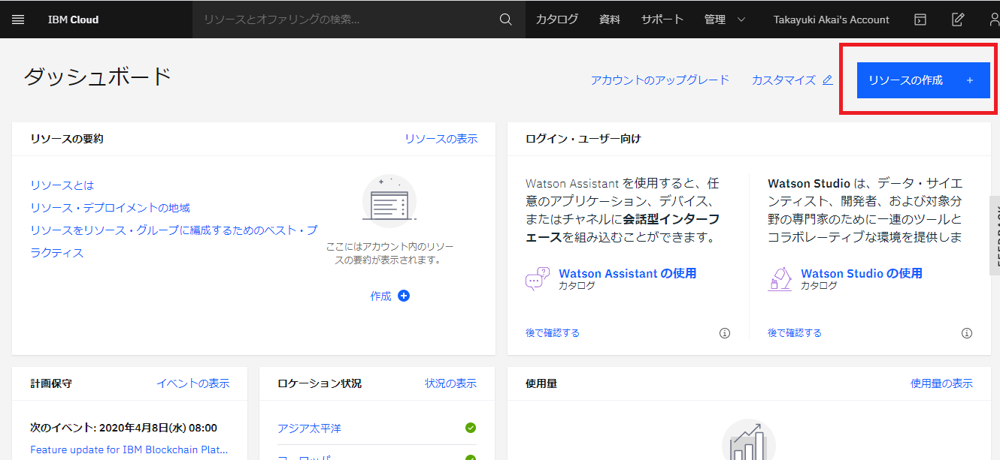
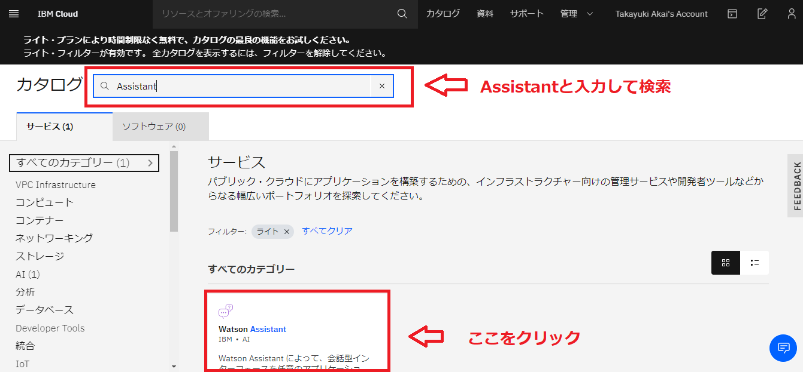
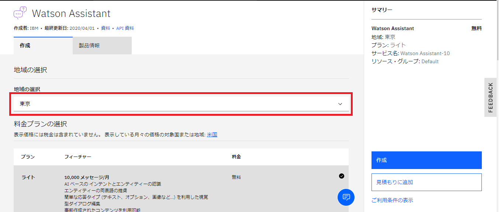
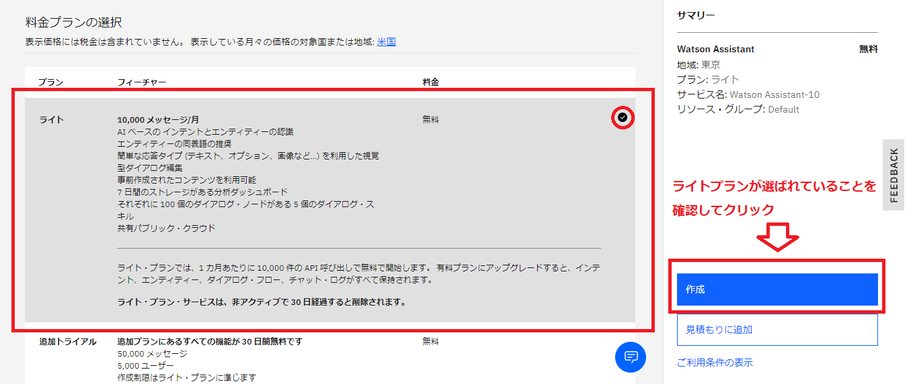
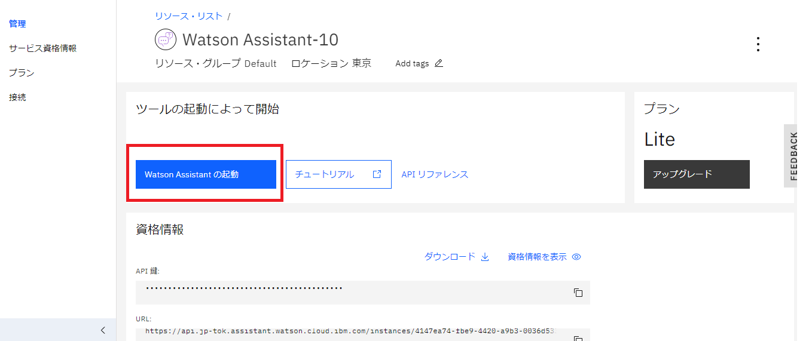
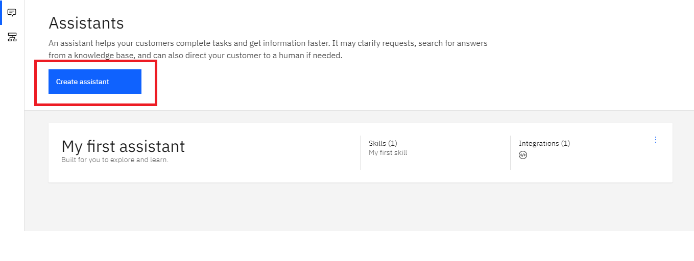
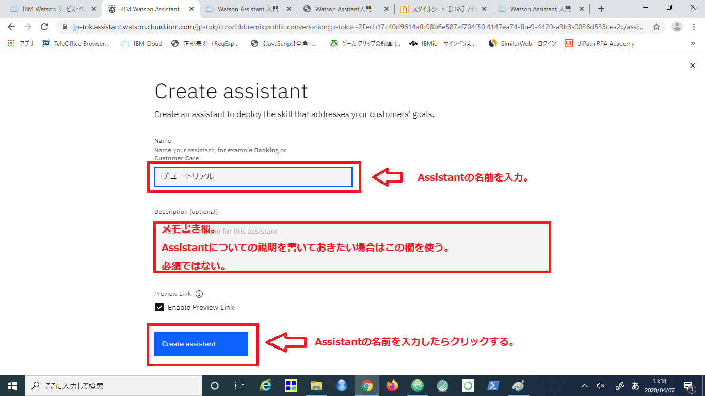
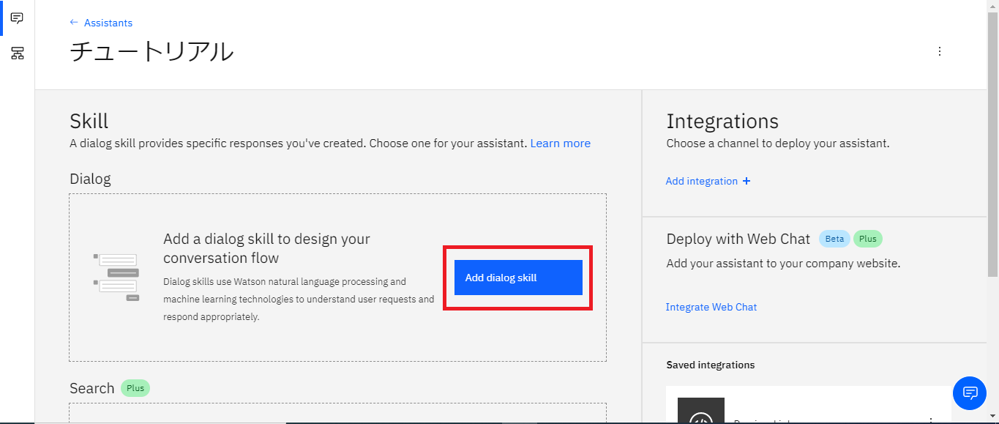
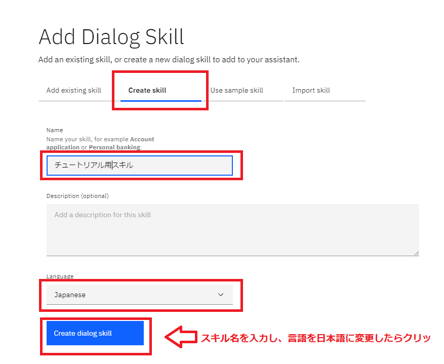

公式ページの説明によると
「Watson Assistant はチャットボット等、ユーザーとコンピューターが自然言語で対話可能なアプリケーションを簡単に開発するためのサービスです。」
ということです。
では、Watson Assitantを使ってチャットボットを作ってみたいと思います。
今回はチャットボットをお試しで作るというコンセプトなので、無料枠で試したいと思います。
IBM Cloudライトアカウントのページから、 アカウントを新規作成してください。
アカウント作成が完了したらログインしてください。ダッシュボードが開いたらログイン完了です。
IBM CloudはAWSやAzureと同様に様々なサービスを提供しているクラウドサービスです。
サードパーティー製サービスを含めて、177のサービスが提供されています。（2020年4月7日現在）
今回はWatson Assistantがテーマなので、Watson Assistantサービスを有効化してみましょう。
まずはダッシュボードから「リソースの作成」をクリックします。

遷移先のカタログ一覧のページで「Assistant」と検索し、表示されたWatson Assistantの項目をクリックします。

Watson Assistantの申し込みページに遷移するので、まずは地域を選択します。
Watson Assistantは無料枠でも東京リージョンが使えるので、今回は東京を選択します。

続いて料金プランの選択に移ります。
ライトプランが選ばれていることを確認します。
問題なければ作成をクリックしてAssistantサービスを有効化します。
※ライトプランで作成した場合は利用にいくつか制限があります。
特に「非アクティブで 30 日経過すると削除」は忘れがちなので検証する際は注意です。

無事にWatson Assistantの有効化が完了すると、リソース管理画面に遷移します。
「Watson Assistantの起動」をクリックして、Watson Assistantの管理画面に遷移します。

それでは手始めに簡単な対話を作ってみましょう。
Watson Assistantの管理画面で「Create Assistant」をクリックします。

Create Assistantの画面が開くので、Assistantの名前を入力して「Create Assitant」をクリックします。

これで「チュートリアル」という名前のAssistantが作成されました。
ここから先の作業を進める前に用語解説です。
Watson AssistantではAssistantとSkillという概念があります。
Assistantはユーザーと対話するロボットの名前で、Skillは「カスタマーサポート」「天気予報」など具体的な能力を指します。
他のチャットボットでも同様ですが、1つのチャットボットに複数領域の知識を詰め込むことは可能ですが、
管理上の問題や認識精度への影響があるため、領域ごとにチャットボットを分ける方がすっきりすると考えられています。
※作り込みの難易度やコスト面の問題もあるため、現実には1つのチャットボットに詰め込まれるケースも多いですが・・・。
Watsonでは現在はAssistantとSkillは1対1ですが、将来的には1つのAssistantに複数のSkillをつけることが可能になると思われます。
それではSkillを作成します。
まずは「Add dialog skill」をクリックします。

スキル選択画面に遷移します。
「Add existing skill」ですでに作成済みのスキルを選択可能ですが、
今回はスキルを新規作成したいので「Create skill」を選びます。
スキル名を入力し、言語設定をJapaneseにしたら、「Create dialog skill」をクリックです。

以上でチャットボットを構築するための環境作りができました。
具体的な構築の入門として、まずは以下の記事を参考に進めてください。